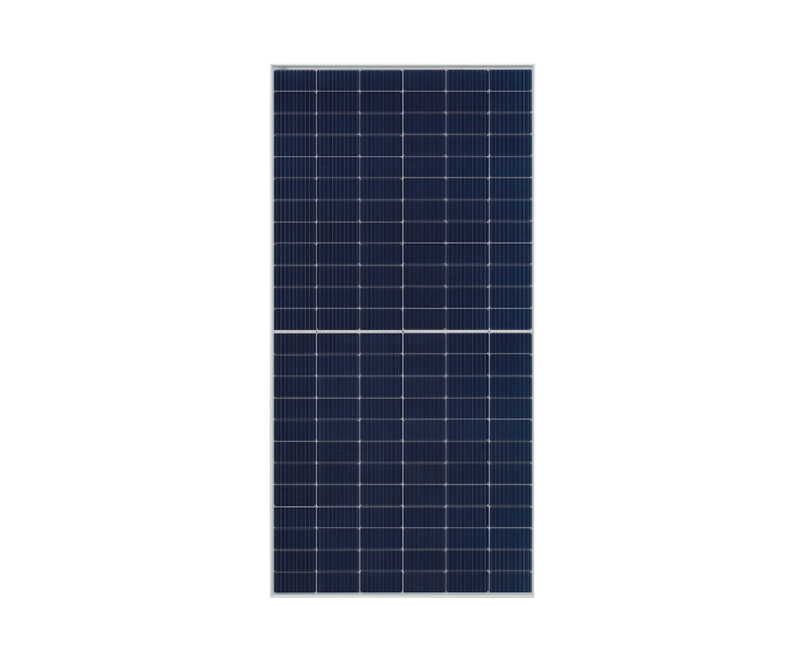

EMPRESAS FABRICANTES
INTELBRAS
A Intelbras já atua há algum tempo no mercado de energia solar, com soluções para diferentes necessidades: sistemas on-grid, off-grid, luminárias solares integradas, entre outros. As placas solares são parte central desses sistemas fotovoltaicos, convertendo energia solar em energia elétrica.
CARACTERISTICAS DAS PLACAS INTELBRAS
1. Tipo de célula / tecnologia
Células policristalinas (por exemplo, no módulo 160 W EMS 160P)
Células monocristalinas ou monocristalinas Half-Cell, em modelos mais potentes (ex: EMST 380M, EMSH-550 HC)
2. Potência máxima (Pmax)
Vários modelos: 160 W (EMS 160P)
335 W (EMST 335P HC)
380 W (EMST 380M)
550 W (EMSH-550 HC)
3. Tensão e corrente
Vmpp(tensão no ponto de máxima potência): varia conforme o modelo; ex: ~ 18 V para os de 160 W policristalinos ~ 37-40 V para modelos de maior potência.
Impp (corrente no ponto de máxima potência): ex: ~ 8,9 A para o de 160 W ~ 13,12 A para o de 550 W
Voc (tensão de circuito aberto) e Isc (corrente de curto-circuito) também são especificadas para cada modelo.
4. Eficiência
Varia de ~ 16-17 % nos modelos policristalinos de média potência a até ~ 21,3 % em modelos monocristalinos Half-Cell de alta potência.
Exemplo: EMST-335P HC com ~ 16,95 % EMSH-550 HC com ~ 21,30 %
5. Certificação e normas
Registro no INMETRO para garantir a conformidade no Brasil. Padrões de segurança e qualidade, tais como grau de proteção IP (caixa de junção) alto em muitos casos (ex: IP 65, IP 68)
6. Dimensões, peso e estrutura mecânica
Dimensões típicas variam bastante conforme potência. Ex: módulo de 160 W: ~ 1479 × 664 × 35 mm e peso ~ 10,6 kg.
Módulo de 335 W: ~ 1992 × 992 × 30 mm e peso ~ 20,3 kg.
Estrutura de alumínio anodizado, conectores MC4, diodos bypass para mitigar perdas em sombras parciais.
7. Temperaturas de operação e coeficientes térmicos
Faixa de operação de -40 °C até cerca de +85 °C em muitos modelos.
Coeficientes de temperatura para Pmax negativo (por volta de −0,3 a −0,4 %/°C) e para Voc também negativo, mostrando que para temperaturas altas a potência cai.
8. Outros parâmetros importantes
Tensão máxima do sistema (voltagem permitida para somar vários módulos em série): ex: 1500 Vcc em modelos maiores.
Resistência mecânica: cargas de vento e neve especificadas em alguns modelos. Ex: carga de neve até ~ 5400 Pa; vento ~ 2400 Pa.
Garantia: garantia de produto + garantia de desempenho ao longo dos anos (por exemplo, garante certa eficiência mínima após muitos anos de uso) nos modelos mais recentes.
Placa Solar Intelbras
EMPRESA WEG
A WEG é uma das empresas mais emblemáticas do Brasil, reconhecida mundialmente como líder em soluções para eficiência energética, automação industrial e equipamentos elétricos. Fundada em 1961, a companhia transformou uma pequena oficina em Jaraguá do Sul (Santa Catarina) em uma multinacional com presença global, exportando para mais de 135 países e faturando bilhões anualmente. A WEG nasceu da visão empreendedora de três amigos: Werner Ricardo Voigt, Eggon João da Silva e Geraldo Werninghaus – cujas iniciais formam o nome da empresa. Começou como uma fábrica de motores elétricos monofásicos, atendendo a demanda local por equipamentos acessíveis e confiáveis. Nos anos 1970, expandiu-se para motores trifásicos e, na década de 1980, internacionalizou-se com filiais nos EUA e Europa. Hoje, com mais de 40 mil colaboradores em 16 países, a WEG é listada na B3 (Bolsa de Valores de São Paulo) desde 1978 e tem um valor de mercado superior a R$ 100 bilhões. Seu crescimento é impulsionado por aquisições estratégicas, como a compra da Marathon Electric (EUA) e da Regal Beloit (em partes), consolidando sua posição como uma das maiores do setor elétrico global.
PLACA SOLAR WEG
Fundada em 1961, a WEG sempre priorizou eficiência energética, e a transição para renováveis veio naturalmente na década de 2010, com investimentos em tecnologias verdes. Hoje, a empresa exporta soluções solares para mais de 100 países, impulsionada pela demanda global por redução de emissões de carbono. No Brasil, onde o sol é abundante, a WEG atende desde residências até usinas de grande porte, alinhadas a políticas como o Programa de Desenvolvimento da Geração Distribuída (ProGD). Sua fábrica em Santa Catarina e centros de P&D dedicados garantem produtos adaptados ao clima tropical, resistentes a umidade e poeira. A WEG não fabrica placas solares em massa como marcas especializadas (ex.: Jinko ou Canadian Solar), mas integra módulos fotovoltaicos de alta qualidade em seus sistemas completos. Através da WEG Solar, ela fornece kits que incluem painéis selecionados, inversores e estruturas, facilitando instalações "chave na mão" para instaladores e consumidores.
Placa Solar WEG
COMPARAÇÃO WEG E INTELBRAS
Ambas a Intelbras e a WEG são marcas brasileiras consolidadas no mercado de energia solar, oferecendo soluções confiáveis e adaptadas ao clima do Brasil. A Intelbras, com foco em acessibilidade e simplicidade para residências e pequenos negócios, destaca-se por kits completos e fáceis de instalar. Já a WEG, gigante industrial, prioriza eficiência e integração em sistemas maiores, com ênfase em automação e durabilidade para aplicações comerciais ou rurais. Nenhuma das duas fabrica painéis do zero em escala massiva (usam células de fornecedores globais como Jinko ou Trina), mas integram módulos de alta qualidade em suas linhas Solar. A Intelbras oferece painéis monocristalinos e policristalinos com potências de 160W a 550W por módulo. A eficiência varia de 18% a 21%, com tecnologias como PERC (Passivated Emitter Rear Cell) para melhor captação em dias nublados. Modelos como o MSH 550W são compactos (cerca de 2m x 1m, 22kg), ideais para telhados residenciais limitados. Em um kit de 3kW, você pode usar 6-8 painéis, gerando até 4.000-5.000 kWh/ano em regiões ensolaradas como o Sudeste. Já os módulos integrados (na linha WEG Solar) vão de 300W a 550W, com eficiência superior de 20% a 22%, graças a células half-cut e bifaciais que captam luz refletida (aumentando a produção em 10-30%). São ligeiramente maiores (1,7m x 1,1m, 20-25kg), otimizados para strings longas em usinas maiores. Um sistema de 5kW pode incluir 8-10 painéis, alcançando 6.000-8.000 kWh/ano, com melhor desempenho em sombreamento parcial via MPPT avançado. A Intelbras vence em acessibilidade, facilidade e custo inicial, sendo ideal para quem está começando no solar residencial ou busca uma solução "pronta para usar" sem complicações. Já a WEG se destaca em eficiência, robustez e inovação, perfeita para projetos profissionais que demandam alta performance e integração. Ambas têm certificações Inmetro e garantias sólidas, contribuindo para a energia limpa no Brasil. Para decidir, calcule seu consumo (use simuladores nos sites delas) e consulte um instalador.